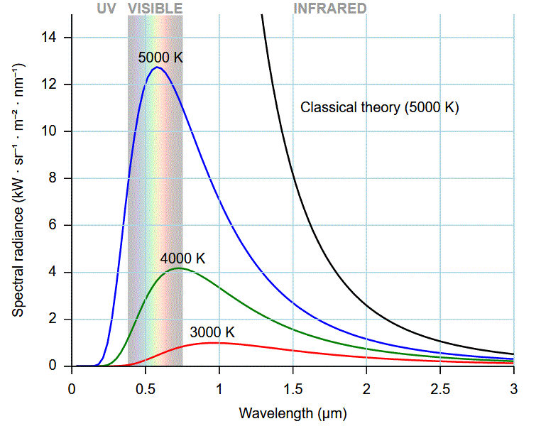

|
The blue curve shows the solar radiation at the top of the atmosphere. The yellow curve shows the radiation at the earth's surface, and is lower due to reflection, absorption, and scattering in the atmosphere on the way down. Several absorption bands, where the atmosphere absorbs preferentially, appear as downward spikes in the yellow curve. Each absorption band corresponds to a specific gas in the atmosphere. |
The Stefan-Boltzmann law governs the radiation of energy by a black body: M = {emissivity} * T4. Emissivity is a constant (perhaps a function of wavelength), so the energy radiated increases as the 4th power of temperature. The sun, T=6000°K, emits vastly more energy than the earth at T=300°K.
The wavelength of maximum energy radiated by a body is given by Wien's displacement law: Lambda = A / T. A is a constant, so as temperature increase the wavelength decreases. The sun, T=6000°K, emits primarily in the visible range, while the earth, T=300°K, emits primarily in the thermal IR range.
The atmosphere greatly affects remote sensing, dictating what portions of the electromagnetic spectrum we use.
A body emits radiation as a result of its temperature. A surface reflects energy according to its albedo; with a high albedo, most of the energy is bounced off the surface without change. Low albedo surfaces absorb the energy, which will warm the object and eventually be reradiated at the longer wavelength characteristic of the body's temperature. Albedo, like emissivity, is a function of wavelength. The sum emits with a peak in the visible, which the earth absorbs and then reradiates with a peak in the thermal IR portion of the spectrum. This "greenhouse effect" heats the atmosphere from below, as the visible light from the sun passes through the atmosphere with little impact other than scattering, mostly in the blue wavelengths, while the atmosphere absorbs the thermal energy reradiated by the earth. Reflected energy requires an outside source, usually the sun, and thus works only during the day.
Remote sensing generally uses wavelengths in micometers (µm), and considers UV, visible, NIR, SWIR, TIR, and microwave. UV, VIS, and NIR are emitted by the sun and reflected to various degrees from the earth, based on the albedo at a particular frequency. The TIR and microwave are emitted by the earth. All of the energy wavelengths can be affected by the atmosphere, and limit what the satllite can detect.
 |
Black body (emissivity = 1) radiation at various temperatures. These curves
reflect the physics in
Kirchhoff's law,
Wien's displacement law, and The Stefan–Boltzmann
law. The sun, with a temperature of about 6000K, emits a lot of energy, with the peak in the visible portion of the spectrum. This energy, after passing through the atmosphere, reflects from the surface and can be measured by satellite sensors. The earth, with a temperature of about 300K, emits much less energy, and its peak emission is diplaced to much long wavelengths in the thermal IR part of the spectrum, offscale in this diagram. Becasue of the small energy, the TIR bands on Landsat have much lower spatial resolution. At one time they came in 120 m pixels sizes, which made remote sensing software deal with the differences. As storage costs came down, the TIR bands were distributed with with same 30 m pixel size as the other bands, but they are noticeably more blurry than the other bands. Weather satellites, which seek very accurate temperature readings, have much larger pixel sizes, on the order of a kilometer, which is acceptable because of the small scale at which atomosphere and ocean operate. Landsat 7 and 8 have a panchromatic band, with a much wider range of wavelengths collected. This collects much more energy, because there is a much larger area under the curve, and allows Landsat to have 15 m pixels for this band. Figure from wikipedia. |
Last revision 11/2/2021